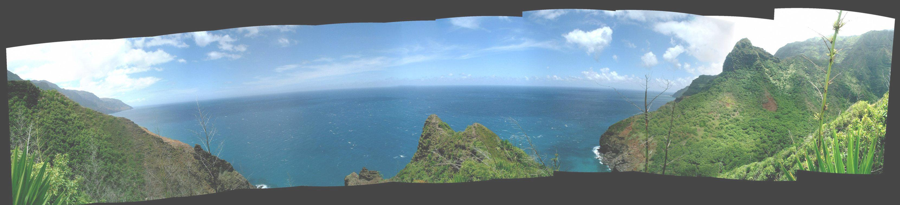

This post is also available in: en

About me
An Astronomer in the UC Berkeley Radio Astronomy Lab. I am interested in fast radio transients, data-intensive science, Python, and Civic Hacking.
My Projects
- Fast Imaging with Radio Interferometers Using radio interferometers as high-speed cameras to capture millisecond impulses from rare transients like fast radio bursts, pulsars, and stars.
- Real-time data analysis Developing the Very Large Array as a real-time, commensal transient search platform.
- VLA Sky Survey I am co-chair of the technical working group for an ambitious new sky survey with the world's most sensitive radio interferometer.